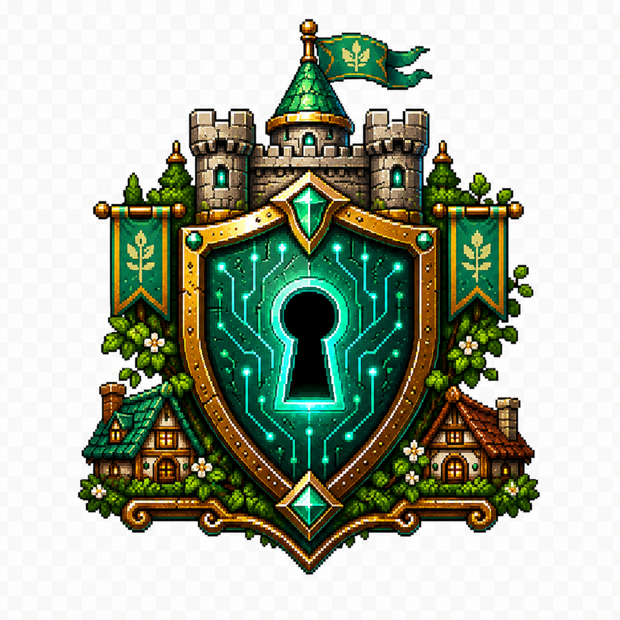
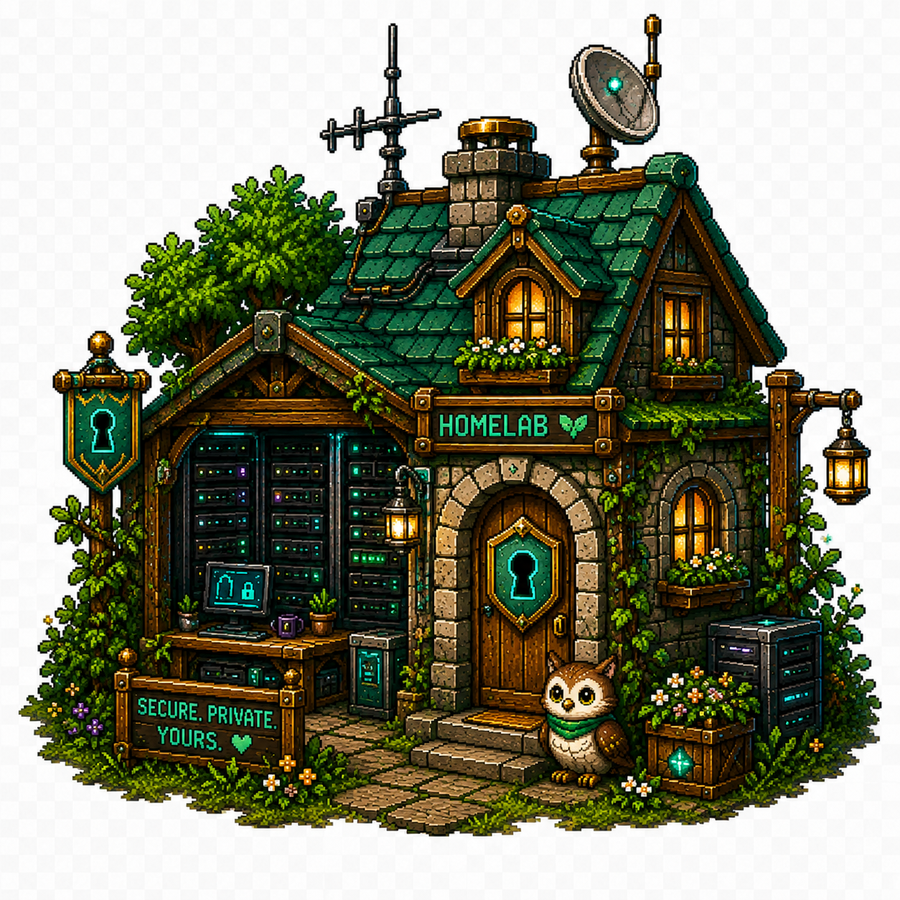
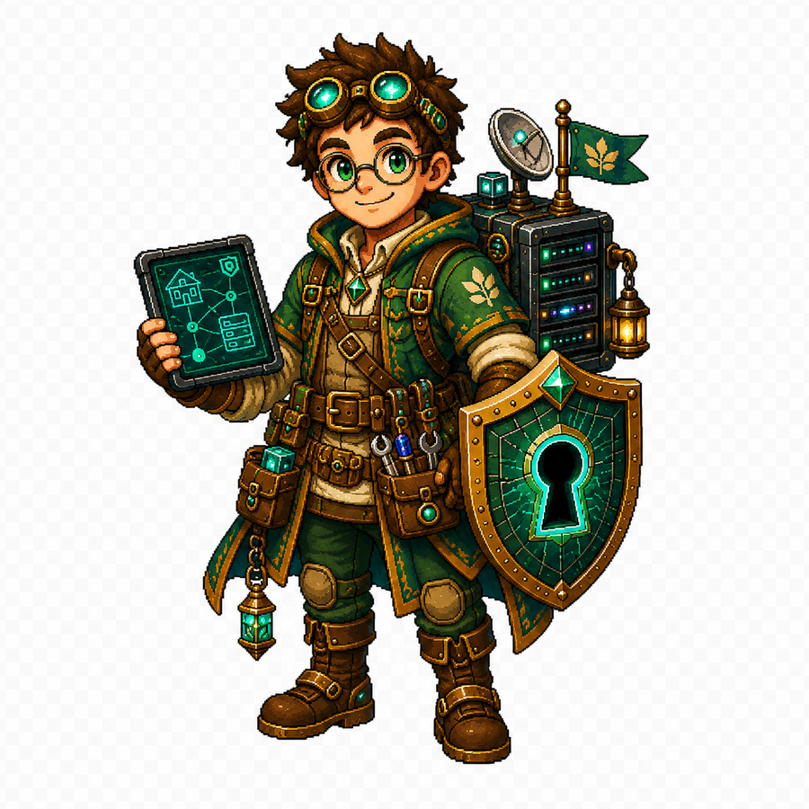
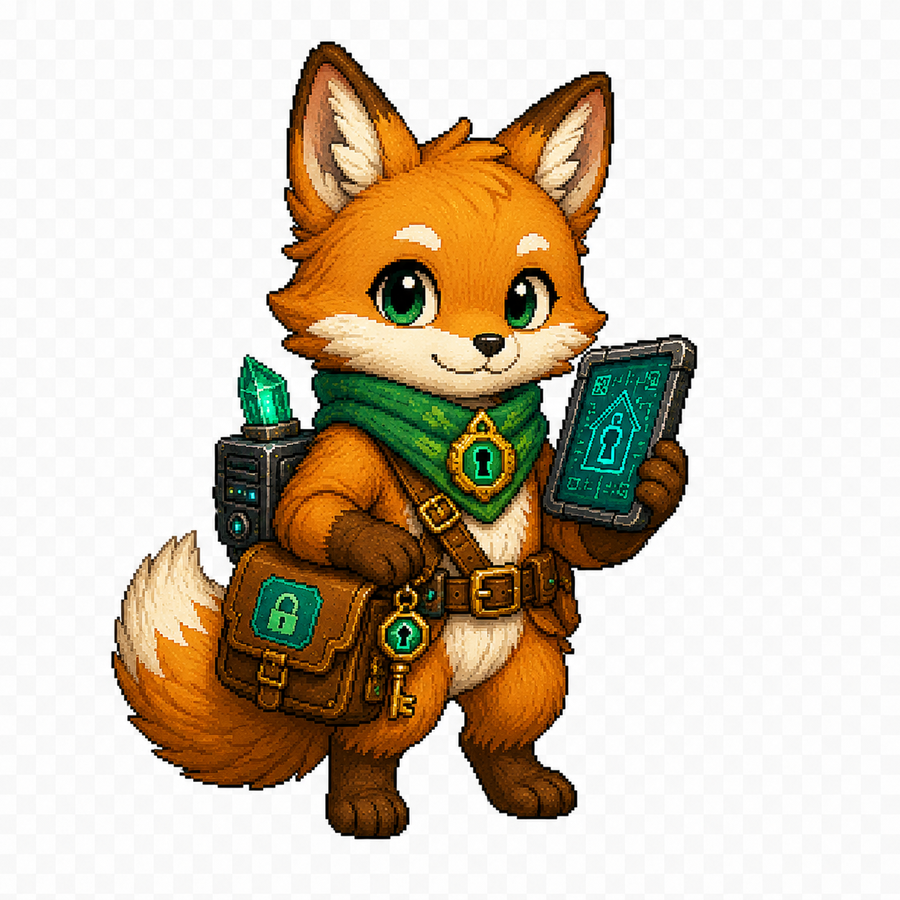

Tech & Architecture
Cloud, platform engineering, enterprise architecture, patterns, tooling en pragmatische bouwblokken.
Een persoonlijke keep voor retro gaming, fantasy/RPG, homelab, cloud, IT-architectuur en privacy-by-design.
init keep-gate... OK mount /homelab... OK load retro-sprites... OK enable privacy-shield... OK status: site forge in progress
Roadmap
Cloud, platform engineering, enterprise architecture, patterns, tooling en pragmatische bouwblokken.
Privacy-by-design, self-hosting, zero-trust, dataminimalisatie en security controls zonder theater.
Servers, containers, GitOps, monitoring, storage, backups en lessons learned uit de eigen keep.
Amiga, C64, SNES/NES, pixel art, emulatie, retro workflows en nostalgie met moderne infra.
Worldbuilding, tabletop/RPG, Magic: The Gathering vibes, items, characters en guild-style lore.
Logo’s, badges, mascots, clipart en webcomponenten in één consistente fantasy-tech stijl.
Build queue




Demoscene nod
De pagina gebruikt scanlines, pixel panels, CRT glow, sprite-achtige assets en een browser-native chiptune loop. Geen framework, geen trackers, geen CDN. Gewoon statisch, snel en hostbaar op GitHub Pages.